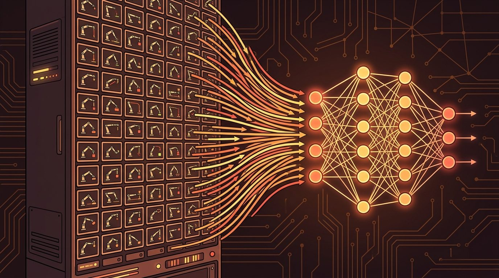
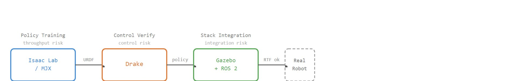

"A simulator that cannot talk to the rest of the robot is a very convincing island."
A Systems-Minded Embodied AI Agent

This section assumes familiarity with rigid-body dynamics and contact models introduced in section 6.3 and the simulator selection criteria established in section 11.1. The Drake and SAPIEN workflows described here feed directly into the domain randomization pipelines covered in section 13.2, and the ROS 2 integration patterns recur in Part V alongside hardware-in-the-loop deployment in section 22.4.
A policy that achieves 95% success in an Isaac Lab rollout can fail the moment it meets a real controller, a sensor topic, or a clock that drifts. In practice this gap is usually not a simulation fidelity problem in the narrow sense (contact physics being wrong); it is more often a systems integration problem (the trained policy never faced a real clock, transform tree, or topic before deployment). Drake, SAPIEN, ROS 2, and Gazebo exist precisely to close it. Right now, as manipulation and mobile manipulation edge toward deployment, teams that treat simulators as isolated training loops are discovering the gap the hard way. Here you will learn when to reach for each tool, how to wire them together through a shared robot model (URDF or MJCF) and matched acceptance metrics at each phase boundary, as the algorithm and worked example later in this section show step by step, and what acceptance criterion tells you the boundary between sim and robot is safe to cross.
A simulator that cannot connect to the robot stack is a sandbox, not a deployment rehearsal. Middleware, clocks, transforms, and logs decide whether simulated success survives contact with hardware.
This section applies the dynamics background from Chapter 6: Dynamics and Simulation Math to the simulator stack introduced in Chapter 9: Why Simulation Is Central. It also prepares the GPU training workflows in Chapter 17: Massively Parallel and GPU RL and the randomization workflow in Chapter 13: Domain Randomization and Synthetic Data by tying tool choice to measurable task risk.
Picture a roboticist who needs to prove that a manipulator's controller will stay stable through every contact mode of a planned grasp, before a single motor turns: that proof is the job Drake was built for, not the millions of randomized episodes an RL factory churns through. Drake is strongest when you need dynamics, planning, control, optimization, and verification in one systems framework. It is the tool you reach for when the question sounds like "can we formulate this controller, planner, or stability condition precisely?" rather than "how many randomized episodes can we run this hour?"
That distinction matters when a learned policy needs a model-based guardrail. Drake can help analyze contact modes, constraints, trajectories, or controller stability around a small scenario. It complements GPU training rather than replacing it.
Where Drake reasons about one carefully specified controller, the next tool faces the opposite pressure: it must simulate many objects and many grasps fast enough to train a policy that generalizes.
SAPIEN provides physical simulation for robots, rigid bodies, and articulated objects. It is especially visible through ManiSkill, a manipulation and robot-learning benchmark framework powered by SAPIEN. ManiSkill3 emphasizes GPU-parallel simulation and rendering for manipulation tasks, which makes it a natural bridge from this chapter to the benchmark chapter that follows.
Articulated-object simulation matters in embodied AI. Real manipulation targets (cabinets, bottles with caps, laptop lids) have internal degrees of freedom that a rigid-body-only simulator ignores entirely. Train a policy without the object's own joint constraints and link inertias, and it applies physically impossible forces. Those controllers tear hinges or jam joints the moment they touch real hardware.
SAPIEN models articulation through a reduced-coordinate formulation (each joint's own angle or displacement is the state variable, rather than the full 6 degrees of freedom of every link in world coordinates) , which keeps the number of state variables equal to the number of joints instead of growing with every constraint the solver would otherwise need to enforce: each link's motion is expressed in joint-space coordinates relative to its parent, and the simulator propagates forces and velocities through the kinematic tree using recursive Newton-Euler dynamics. Contact between a robot finger and an articulated object part is resolved jointly, so the gripper and the object's internal joints share the same constraint solve each timestep.
Think of a recursive Newton-Euler solve through a kinematic tree like reading a recipe that is written as a chain of steps where each step's result feeds the next. When you push the lid of a jar, the force travels from your fingers through the lid's thread, into the jar's body, and finally into the table holding it; you cannot calculate how much the table pushes back without first knowing what the jar does, and you cannot know what the jar does without knowing what the lid does. SAPIEN resolves a robot finger and an articulated cabinet door the same way: forces and accelerations cascade from parent link to child link and back in one coordinated pass, so the gripper and the hinge share a single consistent answer each timestep rather than two separate, potentially contradictory ones.
The benchmark strength is asset and task consistency. If the research question is manipulation generalization, a shared task suite can be more valuable than a hand-built simulator scene because other groups can reproduce the same objects, initial states, observations, and success metrics.
A reproducible benchmark score still says nothing about whether the policy survives a real robot's software stack, and that question belongs to a different pair of tools.
A policy that survives a GPU training loop but has never touched a real clock, a real topic, or a real TF tree (the ROS 2 transform tree, the running record of every coordinate frame's pose relative to every other) is not a deployed policy; it is a promising hypothesis.

ROS 2 is not a physics simulator, and Gazebo is not a learning library. Together they form the systems-integration path for most robot projects: modern Gazebo wires simulation to sensors, controllers, robot descriptions, and ROS 2 nodes. Gazebo Classic reached end of life in January 2025, so start new projects on a current Gazebo release and a compatible ROS 2 distribution.
The integration test asks a different question than the training test. Training asks how many episodes per second you can run. Integration asks a narrower question. Do clocks, transforms, controllers, and sensor topics match the robot software stack closely enough to catch deployment failures before hardware time? Real-time factor (RTF, the ratio of simulated time elapsed to wall-clock time elapsed; an RTF of 1.0 means the simulation keeps pace with a real clock) is the number that answers this. In the authors' experience, a policy that passes 500 Gazebo integration cycles at a real-time factor of 0.99 typically transfers to hardware within one or two sessions, while the same policy tested only in a GPU training loop often needs several more hardware sessions to stabilize the controller; exact counts vary by robot, sensor suite, and controller complexity, so treat these as illustrative rather than universal figures. That gap is the integration layer speaking. Gazebo catches a clock-timing, topic-latency, or TF-ordering discrepancy in minutes; a full robot session surfaces the same fault. Skipping the integration test does not save time. It moves the cost to the most expensive possible substrate, the physical robot. This is the cost of skipping the integration layer, and it compounds with each added sensor or joint.
So far: Drake gives you model-based control verification for a small, precisely specified scenario; SAPIEN and ManiSkill give you GPU-scale, reproducible manipulation training and benchmarking with articulated objects; and ROS 2 plus Gazebo give you the systems-integration test, the last checkpoint before hardware, where clocks, transforms, and sensor topics either match the real robot stack or reveal a costly mismatch.
| Tool | Best fit | Not the best fit |
|---|---|---|
| Drake | Optimization, planning, control, verification, model-based design | Fastest path to thousands of RL rollouts |
| SAPIEN | Manipulation simulation and articulated object interaction | General robot middleware integration |
| ManiSkill | Manipulation benchmarks and GPU-parallel robot-learning tasks | Full custom robot operating stack tests |
| ROS 2 plus Gazebo | System integration, sensors, controllers, middleware, hardware-like testing | Pure accelerator-native policy training loops |
A common assumption is that Gazebo is a general-purpose training simulator that can replace Isaac Lab or MuJoCo for policy learning, reasoning that "if it can simulate the robot, it can train the policy." This is wrong in the embodied AI context: Gazebo is a systems-integration tool designed for middleware fidelity, real-time sensor topics, and ROS 2 clock synchronization, not for the thousands of parallel rollouts per second that policy learning requires. Treating Gazebo as a training loop produces orders-of-magnitude slower iteration than GPU-native simulators, and the slowness is structural, not a configuration problem. The correct mental model is that Gazebo tests whether the trained policy survives contact with the real software stack, while Isaac Lab, MJX, or MuJoCo Warp produce the policy in the first place; they serve different phases and cannot substitute for each other.
Input: project goal $G$, dominant physical risk $r \in \{\text{control, manipulation, integration, throughput}\}$, throughput target $T$ (rollouts/s), integration boundary $\partial S$ (ROS 2 topics, TF tree, clock)
Output: ordered tool assignment $\pi: \text{phase} \to \text{simulator}$, interface contract $\alpha$ between tools, per-phase acceptance metric $\theta$
Trace the selection checklist for one concrete project: a warehouse robot that opens a cabinet, picks a part, and hands it to a person. Run the steps with actual values rather than symbols.
Code Fragment 1 gives a small classifier for simulator needs. The useful part is not the code itself, but the habit it enforces: decide whether the primary risk is physics, learning throughput, control design, or systems integration before you name a tool.
# Classify a simulator need by the risk that dominates the project.
# This helps separate physics choice from systems-integration choice.
# Add your own project risks before making a tool recommendation.
def recommend_tool(primary_risk: str) -> str:
options = {
"control_verification": "Drake",
"manipulation_benchmark": "SAPIEN or ManiSkill",
"ros2_integration": "ROS 2 with modern Gazebo",
"gpu_policy_training": "Isaac Lab, MJX, or MuJoCo Warp",
}
return options.get(primary_risk, "Run a simulator audit before choosing")
for risk in ["control_verification", "ros2_integration", "unknown"]:
print(f"{risk}: {recommend_tool(risk)}")control_verification: Drake ros2_integration: ROS 2 with modern Gazebo unknown: Run a simulator audit before choosing
recommend_tool function looks up a simulator family by risk key and prints its recommendation for three sample risks (control verification, ROS 2 integration, and an unrecognized risk that falls back to an audit prompt).The hand-written classifier is 15 lines of reasoning. In practice, Drake, ManiSkill, and Gazebo each provide maintained workflows that replace custom integration code. The shortcut only works if you first identify whether the project needs control analysis, manipulation benchmarks, or middleware realism.
Choose a simulator by task contract, not reputation. The same evidence rule applies here: run the same task panel before comparing tools. For the full set of criteria, see section 11.6.
Drake's model-based strength becomes a liability when contact geometry is too complex to express analytically: a dexterous hand grasping an irregular object involves thousands of potential contact modes, and Drake's optimization formulation does not scale to that density the way a GPU rollout loop does. Use Drake for constrained, low-contact-mode problems where you can write down the constraints; hand the rest to a GPU simulator.
ManiSkill benchmarks expose a different failure: because benchmark tasks share fixed assets and success metrics, a policy that scores well on ManiSkill3 tasks may fail on novel object geometry or unusual surface materials that were never in the asset set. Benchmark success is evidence of generalization within the distribution, not across it.
ROS 2 plus Gazebo integration tests fail silently when simulation time drifts from real time under load. If a controller or planner assumes a fixed time step and the Gazebo process cannot keep up, timestamps, TF transforms, and sensor messages arrive late or out of order. The symptom in hardware is a controller that passes all sim tests but oscillates or freezes on the robot. Always check real-time factor in Gazebo logs before trusting integration test results.
Do not build a new ROS 2 simulation workflow around Gazebo Classic. Use modern Gazebo releases and check the compatibility table for your ROS 2 distribution before committing to a stack.
Consider a Boston Dynamics Spot deployment running mobile manipulation: grasping door handles while navigating a facility. The team trains the arm's pick policy in Isaac Lab at roughly 50,000 rollouts per second using a URDF-converted Spot arm model with randomized door-handle friction (0.3 to 0.8) and approach angle (plus or minus 15 degrees). Once the policy converges, it is ported into modern Gazebo (Harmonic, paired with ROS 2 Jazzy) where the full software stack runs: Nav2 costmaps (the ROS 2 navigation stack's occupancy-grid maps used for path planning around obstacles), a ROS 2 joint-trajectory controller publishing at 500 Hz, a depth camera topic at 30 Hz, and a TF tree that must stay synchronized within 5 ms or the arm's Cartesian planner aborts. A separate Drake model of the two-finger gripper verifies that the contact wrench stays within the gripper's 60 N force limit across the handle-geometry distribution. Each tool owns exactly one risk: Isaac Lab owns policy throughput, Gazebo owns stack fidelity, Drake owns contact-force certification. Crossing a phase without the appropriate tool is where hardware sessions are wasted.
Expected output: A multi-tool simulator plan should list each project phase, the tool assigned to that phase, the interface between tools, the shared robot model or conversion step, and the metric that proves the phase did its job.
The trap is asking one tool to be a proof assistant, benchmark suite, RL factory, and robot middleware rehearsal. Strong projects let each simulator do the job it was built to do.
Is your main problem learning a policy, proving a controller property, benchmarking manipulation, or testing a robot software stack? Write that sentence before choosing the simulator.
Pick one real robot project and split its simulator needs into three phases: algorithm development, benchmark evaluation, and system integration. Assign a tool to each phase and explain why one simulator may not be enough.
Cross-simulator policy transfer pipelines (2024-2026). Recent work treats the sim-to-sim gap as a first-class research target rather than an engineering inconvenience. The ManiSkill3 paper (Tao et al., 2024, arXiv:2410.00425) demonstrates GPU-parallel SAPIEN environments that share URDF models with Isaac Lab and MuJoCo, enabling controlled cross-simulator comparisons on the same task distribution. The active question is how much a policy's success metric degrades when the contact solver, timestep, and friction model change between training and evaluation environments.
Tight Drake-ROS 2 integration for certified manipulation (2024-2025). The Drake team and collaborators (Tedrake et al., TRI Research, 2024) have been extending Drake's Python bindings to emit ROS 2 messages directly, allowing model-based controllers designed in Drake to run inside a live Gazebo integration test without re-implementation. This closes the gap between a formally verified contact plan and an executable ROS 2 controller, and it is where Drake transitions from an analysis tool to a deployment component.
Gazebo simulation fidelity benchmarking for contact-rich tasks (2025, ongoing). Work targeting how Gazebo's Bullet-based contact resolution differs from MuJoCo and PhysX for grasping tasks is ongoing as of 2025, with per-task real-time-factor and contact-force-error comparisons being produced by several robotics teams. No canonical published benchmark had reached wide adoption as of mid-2025; readers should search recent IEEE RA-L and IROS proceedings for the latest cross-solver contact fidelity results.
Open problem for PhD students. There is no standard interchange format for transferring a simulator-generated policy test record (contact forces, joint torques, episode logs, TF tree snapshots) from a GPU training loop into a ROS 2 Gazebo integration test for automated regression. A student could define such a format, implement converters for Isaac Lab and modern Gazebo, and measure how many hardware-session failures are caught by the regression suite before a robot ever powers on.
Beginner (weekend): ROS 2 + Gazebo joint-state bridge. Set up a simulated two-joint arm in modern Gazebo (Harmonic), publish its joint states over a ROS 2 topic, and visualize the TF tree in RViz2 to confirm that frame names and timestamps stay synchronized. The key challenge is getting the Gazebo-ROS 2 joint-state broadcaster plugin configured correctly so timestamps never drift from the system clock under load.
Intermediate (1-2 weeks): ManiSkill manipulation policy with a Gymnasium wrapper. Train a pick-and-place policy on a ManiSkill3 articulated-cabinet task using a standard Gymnasium-compatible training loop (Stable-Baselines3 or a minimal Proximal Policy Optimization (PPO) script), then evaluate it on a held-out set of cabinet geometries not seen during training. The key challenge is writing the Gymnasium wrapper correctly so observation spaces, reward signals, and episode resets match what ManiSkill3 exposes through its GPU-parallel environment interface.
Goal. Feel the difference between "the physics runs" and "the stack stays synchronized" by watching Gazebo's real-time factor (RTF) collapse and recover as you load the integration boundary.
Tools needed. A ROS 2 distribution (Jazzy or Humble), modern Gazebo (Harmonic or Fortress, installed via ros_gz), RViz2, and a stock two-joint or simple mobile-base demo world that ships with ros_gz_sim. Budget 15-30 minutes; no real robot required.
What to do. Launch the demo world and bridge its /clock, joint states, and one camera topic into ROS 2 with ros_gz_bridge. Open RViz2 on the TF tree. Read the RTF that Gazebo prints in its status bar and logs.
What to vary. (1) Add a simulated depth camera and raise its publish rate from 5 Hz to 30 Hz to 60 Hz. (2) Increase camera resolution. (3) Add a second sensor topic. (4) Optionally cap CPU threads to mimic a loaded robot computer.
What to observe. Watch RTF drop below 1.0 as sensor load climbs, and watch TF timestamps in RViz2 start lagging behind /clock once RTF falls under roughly 0.9. Note the exact load level where RTF crosses 0.95: that is the empirical edge of a trustworthy integration test. Then reduce resolution or rate and confirm RTF recovers. The takeaway you should be able to state in one sentence: the integration test is only valid while the simulator keeps real-time pace, and RTF is the number that tells you when it stops.
Drake, SAPIEN, ROS 2, and Gazebo complete the simulator stack because they solve different problems: control analysis, manipulation tasks, and robot-system integration.
Section 11.8 turns the entire chapter into a decision guide and a runnable simulator-selection lab.
Drake Development Team. "Drake: Model-Based Design and Verification for Robotics."
Drake is the key reference for optimization-based design, planning, control, and verification. It is the right deeper read for readers whose simulator needs are analytical rather than only throughput-driven.
SAPIEN Team. "SAPIEN Simulator."
SAPIEN provides simulation for robots, rigid bodies, and articulated objects. It is especially relevant for manipulation workflows and for understanding the simulator behind ManiSkill.
ManiSkill Team. "ManiSkill Documentation."
ManiSkill is an open-source robot simulation and training framework powered by SAPIEN. It connects this chapter's simulator discussion to the benchmark and manipulation chapters that follow.
Open Robotics. "Gazebo Documentation."
Modern Gazebo is the current simulator path for many ROS 2 integration workflows. Readers should use these docs rather than Gazebo Classic tutorials when starting new projects.
Open Robotics. "Gazebo Classic End-of-Life Notice."
The Gazebo Classic site documents the January 2025 end-of-life warning. It is included here because using current Gazebo rather than legacy Gazebo is a practical simulator-selection requirement.